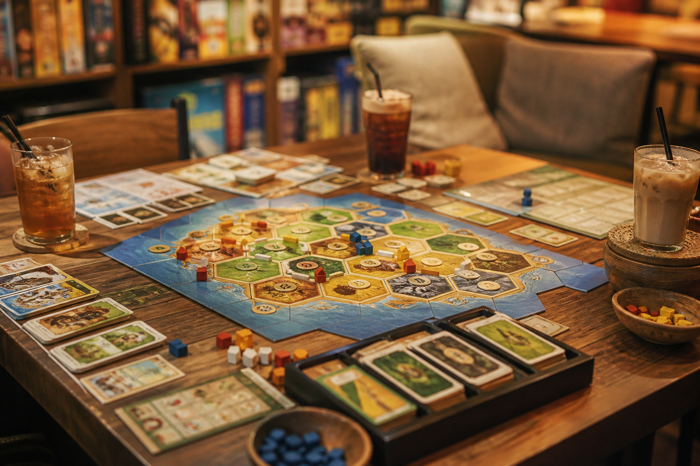

보드게임 카페
수천 종의 보드게임을 빌려 친구·가족과 즐기는 카페.
보드게임 카페는 입장·시간제 요금으로 게임을 빌리고 음료를 마시는 곳입니다. 설명원이 규칙을 알려 주는 매장도 있어 초보 외국인도 도전하기 쉽습니다.
인원과 취향을 말하면 추천해 줍니다. 예약이 필요한 주말·저녁이 많고, 게임은 한 번에 1~2개씩 빌리는 방식이 일반적입니다.
보드게임 카페는 입장·시간제 요금으로 게임을 빌리고 음료를 마시는 곳입니다. 설명원이 규칙을 알려 주는 매장도 있어 초보 외국인도 도전하기 쉽습니다.
인원과 취향을 말하면 추천해 줍니다. 예약이 필요한 주말·저녁이 많고, 게임은 한 번에 1~2개씩 빌리는 방식이 일반적입니다.
가격 분위기 1인 시간당 수천~1만 원대 + 음료 주문이 흔한 편입니다.
이용 팁 구성품 분실에 주의하고, 영어 규칙서가 있는 게임인지 미리 물어보면 편합니다.